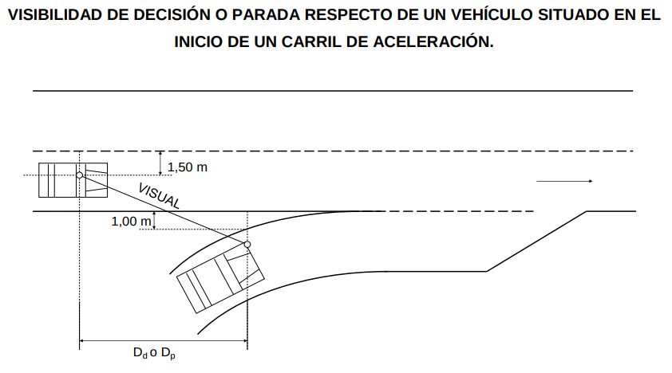

3. Controles de diseño¶
Los parámetros básicos que afectan al trazado son la velocidad y la visibilidad.
3.1. Velocidad¶
La velocidad es una de las variables importantes que intervienen en la circulación, pues influye al mismo tiempo en la calidad del servicio a través del tiempo que se tarda en un desplazammiento y en la seguridad en la circulación. Donde otros factores no lo impidan (como una densidad de tráfico elevada o unas características del entorno que hagan que el diseño resulte muy costoso o inaceptable desde el punto de vista medioambiental), parece razonable en principio que el trazado permita circular con comodidad a las velocidades deseadas por la práctica totalidad de los conductores. Estas velocidades deseadas suelen ser bastante elevadas, y cualquier limitación derivada del trazado debe ser percibida con claridad por los conductores.
El trazado de una carretera se definirá en relación con la velocidad a la que se estima que circularán los vehículos en condiciones de comodidad y seguridad. Para evaluar cómo se distribuyen las velocidades en cada sección, se considerarán fijos los factores que incidan en ella relacionados con la clase de carretera y con la limitación genérica de velocidad asociada a ella, así como las características propias de las secciones próximas.
En general interesa más estudiar unos valores representativos de la distribución de las velocidades de los distintos vehículos que seguir la evolucion de cada uno de ellos de manera individual. Para los aspectos del diseño de la carretera relacionados con la comodidad de la circulación es habitual tomar como referencia la velocidad V85 , que es la velocidad que solo es superada por un 15% de los vehículos. La utilización de V85 para el diseño debe proporcionar también un suficiente margen de seguridad estricta a los vehículos más rápidos. Es la velocidad operativa característica de un elemento, representada por el percentil ochenta y cinco (85) de la distribución de velocidades libres temporales de vehículos ligeros observadas en servicio. En fase de proyecto deberá ser estimada.
3.1.1. Velocidad específica de un elemento de trazado¶
La velocidad específica de un elemento de trazado, aisladamente considerado, se define como la máxima velocidad que se puede mantener a lo largo del elemento, en condiciones de comodidad y de seguridad, cuando encontrándose el pavimento mojado y los neumáticos en buen estado, las condiciones meteorológicas, del tráfico y legales son tales que no imponen limitaciones a la velocidad. Normalmente las condiciones de comodidad son más exigentes que las de seguridad estricta.
Velocidad específica de una curva circular (Ve): Velocidad que puede mantener un vehículo a lo largo de una curva circular considerada aisladamente, en condiciones de comodidad y seguridad, cuando encontrándose el pavimento húmedo y los neumáticos en buen estado, las condiciones meteorológicas, del tráfico y legales son tales que no imponen limitaciones a dicha velocidad.
3.1.2. Velocidad de proyecto de un tramo de carretera¶
La velocidad de proyecto de un tramo de carretera, Vp es la velocidad específica mínima de los elementos que forman el tramo. La velocidad de proyecto de un tramo es la velocidad para la que se definen las características geométricas del trazado de un tramo de carretera en condiciones de comodidad y seguridad.
Cuanto mayor sea la velocidad de proyecto de un tramo de carretera, mayores serán las dimensiones de sus elementos y menores sus curvaturas e inclinaciones. Esto hace que, a poco accidentado que sea el relieve del terreno en el que esté insertado el tramo de carretera, mayor será el coste de las explanaciones y de las obras singulares (viaductos y túneles). Por lo tanto, donde las circunstancias dejen de ser favorables, el coste de construcción puede obligar a limitar la velocidad de proyecto, para adaptar el trazado a un relieve acentuado.
La velocidad de recorrido de un tramo, Vr es la media armónica ponderada de las velocidades de recorrido de subtramos homogéneos, dada por la expresión:

Siendo:
- lk = Longitud del subtramo k
- Vrk = Velocidad de recorrido de un subtramo k, calculada como el cociente entre su longitud y el tiempo medio de recorrido de todos los vehículos que circulan por dicho subtramo, incluyendo los tiempos de demora debidos a detenciones o paradas
Se considerará que un subtramo homogéneo es aquel en el que la velocidad se puede considerar constante.
La velocidad libre (Vl) es la velocidad a la que puede circular un vehículo ligero sin más condicionantes que las características de la carretera y el límite establecido por la regulación legal vigente.
Las velocidades de proyecto y de recorrido que se adopten estarán, en general, definidas en los estudios de carreteras correspondientes, en función de los siguientes factores:
- Condiciones topográficas y del entorno
- Características ambientales
- Consideración de la función de la vía dentro del sistema de transporte por carretera
- Homogeneidad del itinerario
- Condiciones económicas
- Distancias entre conexiones o accesos y sus tipologías
3.2. Visibilidad¶
En cualquier punto de la carretera el conductor de un vehículo deberá tener una visibilidad que dependerá de la forma, las dimensiones y la disposición de los elementos del trazado.
Para que las distintas maniobras puedan efectuarse en condiciones de comodidad y seguridad, se necesitará una visibilidad mínima que dependerá de la velocidad de los vehículos y del tipo de dichas maniobras.
En este curso se van a considerar: visibilidad de parada, visibilidad de adelantamiento, visibilidad de decisión y visibilidad de cruce.
En todos los casos, el punto de vista del conductor se fija, a efectos del cálculo, a una altura de un metro y diez centímetros (1,10 m) sobre la calzada y a una distancia de un metro y cincuenta centímetros (1,50 m) del borde izquierdo de cada carril, por el interior del mismo y en el sentido de la marcha.
Las visibilidades se calcularán siempre para condiciones óptimas de iluminación.
3.2.1. Distancia de parada¶
Se define como distancia de parada (Dp) la distancia total recorrida por un vehículo obligado a detenerse ante un obstáculo inesperado en su trayectoria, medida desde su posición en el momento de aparecer el objeto que motiva la detención. Incluye la distancia recorrida durante los tiempos de percepción, reacción y frenado. Se estimará mediante la expresión:

Siendo:
- Dp = Distancia de parada (m)
- V = Velocidad al inicio de la maniobra de frenado (km/h)
- fl = Coeficiente de rozamiento longitudinal movilizado rueda-pavimento
- i = Inclinación de la rasante (en tanto por uno)
- tp = Tiempo de percepción y reacción (s)
A efectos de diseño se considerará como distancia de parada, la obtenida a partir del valor de la velocidad de proyecto (Vp) del tramo considerado.
El coeficiente de rozamiento longitudinal movilizado (fl) en una maniobra de frenado para diferentes valores de la velocidad se obtendrá de la tabla siguiente. Para valores intermedios de dicha velocidad se podrá interpolar linealmente en dicha tabla. El valor del tiempo de percepción y reacción será de dos segundos (2 s).

En la siguiente figura se representan los valores de la distancia de parada en función de la velocidad, para distintas inclinaciones de la rasante.

3.2.2. Visibilidad de parada¶
Se define la visibilidad de parada dentro de un carril como la distancia que existe entre un vehículo y un obstáculo situado en su trayectoria, en el momento en que el conductor puede divisarlo sin que luego desaparezca de su campo visual. La distancia se medirá a lo largo del carril.
Para el cálculo de la visibilidad de parada, se fijará la altura del obstáculo sobre la rasante de la calzada en cincuenta centímetros (50 cm), pudiendo situarse en cualquier punto de la sección transversal del carril (sección de obstáculo). En los tramos de carretera donde se considere que puedan existir obstáculos con altura inferior a cincuenta centímetros (< 50 cm) se analizará la conveniencia de fijar otra altura del obstáculo con un valor no inferior a veinte centímetros (>20 cm).
Se considera que un obstáculo es divisable siempre que pueda trazarse una visual entre el punto de vista del conductor y todos los puntos superiores del obstáculo.
Se podrá considerar que las pilas y estribos de estructuras, los sistemas de contención de vehículos y los elementos de señalización e iluminación de la carretera no suponen un obstáculo intermedio para la visual siempre que, una vez divisada completamente la sección de obstáculo, ésta ha quedado parcialmente oculta por el obstáculo intermedio en no más de un metro (< 1,00 m).
La visibilidad de parada deberá ser superior a la distancia de parada calculada con la velocidad de proyecto (Vp) del correspondiente tramo, en cuyo caso se dice que existe visibilidad de parada.
3.2.3. Distancia de adelantamiento¶
A efectos del cálculo de los tramos con distancia de adelantamiento en carreteras convencionales, se define como distancia de adelantamiento Da, la distancia necesaria para que un vehículo pueda adelantar a otro que circula a menor velocidad, en presencia de un tercero que circula en sentido opuesto. Se medirá a lo largo del eje que separa los dos sentidos de circulación y se obtendrá teniendo en cuenta las siguientes condiciones:
- Para iniciar la prohibición de adelantar (final de la marca vial discontinua), valores menores que los de la distancia Da1 indicados en la tabla siguiente:

Siendo Vp la Velocidad de proyecto del tramo considerado. Si no existe la distancia mínima requerida Da1 se dispondrá marca vial continua.
- Para finalizar la prohibición de adelantar (inicio de la marca vial discontinua), los valores de la distancia Da2 indicados en la siguiente:

Siendo Vp la Velocidad de proyecto del tramo considerado. Cuando entre dos prohibiciones de adelantamiento quede un tramo de marca vial discontinua de longitud inferior a la indicada en la primera tabla, se unirán ambas prohibiciones, de modo que no se permitirá adelantar en tramos de longitud inferior a la distancia Da2.
La utilización de las tablas anteriores supone que la velocidad máxima señalizada en el tramo coincide con la velocidad de proyecto (Vp).
3.2.4. Visibilidad de adelantamiento¶
En carreteras convencionales se considerará como visibilidad de adelantamiento la distancia disponible, medida a lo largo del eje que separa ambos sentidos de circulación, entre la posición del vehículo que efectúa la maniobra de adelantamiento y la posición del vehículo que circula en sentido opuesto, en el momento en que pueda divisarlo y sin que luego desaparezca de su vista hasta finalizar dicha maniobra.
Para determinar la posición del vehículo que circula en sentido opuesto se admitirá, de forma simplificada, que es visible cuando pueda trazarse una visual sin obstáculo desde el punto de vista del vehículo que efectúa la maniobra de adelantamiento hasta un punto del vehículo que circula en sentido opuesto situado a una altura de un metro y diez centímetros (1,10 m) y a una distancia de un metro y cincuenta centímetros (1,50 m) del eje que separa los dos sentidos de circulación.
Se procurará obtener tramos de la máxima longitud posible en los que la visibilidad de adelantamiento sea mayor que la distancia de adelantamiento Da2.
3.2.5. Distancia de decisión¶
Se define como distancia de decisión Dd, la distancia medida a lo largo de la trayectoria que realiza un vehículo para que su conductor, en un entorno viario que puede estar visualmente congestionado, perciba la información proporcionada por la señalización y la existencia de una situación inesperada o difícil de percibir, las reconozca, valore el riesgo que representan, adopte una velocidad y una trayectoria adecuadas y lleve a cabo con seguridad y eficiencia la maniobra necesaria.
La distancia de decisión Dd corresponde a la distancia recorrida en diez segundos (10 s) a la velocidad de proyecto (Vp) del tramo considerado y sus valores mínimos se indican en la tabla siguiente:
{kind=link}
3.2.6. Visibilidad de decisión¶
Se considerará como visibilidad de decisión la distancia en línea recta entre la posición de un vehículo en movimiento (definido por el punto de vista del conductor) y el elemento que debe observar el conductor medida sobre el eje de la carretera.
Los carteles laterales, las banderolas y los pórticos de salida inmediata deberán ser percibidos a una distancia mayor que los valores mínimos de la distancia de decisión Dd indicados en la Tabla 3.4. La distancia entre el punto de vista del conductor y el centro geométrico de los carteles de salida inmediata se medirá en línea recta.
La esquina delantera izquierda de un vehículo ligero (turismo) situado en la sección característica de un metro (1,00 m) en el centro del carril de aceleración de un ramal de enlace o una vía de giro de un nudo, deberá ser advertida por los conductores de los vehículos que circulan por los carriles básicos de un nudo a la distancia de parada Dp (mínimo) o a la distancia de decisión Dd (deseable) (Ver figura).
Si en la aproximación a un nudo no se dispone de esta visibilidad de decisión se mejorará la percepción de los conductores mediante reducción de la velocidad señalizada en el tramo o mediante la implantación de ayudas a la conducción.
{kind=link}
3.2.7. Visibilidad de cruce¶
Se considerará como visibilidad de cruce, la distancia que precisa ver el conductor de un vehículo para poder cruzar otra vía que intersecta su trayectoria, medida a lo largo de la carretera atravesada. Estará determinada por las dos condiciones siguientes:
- El conductor de un vehículo que circula por una vía puede ver si otro vehículo se dispone a cruzar dicha vía.
- El conductor de un vehículo que va a cruzar la vía ve al vehículo que se aproxima
Se considerará a todos los efectos que el vehículo que realiza el movimiento de cruce desde la conexión o el acceso, parte del reposo y está situado a una distancia, medida perpendicularmente al borde del carril más próximo de la vía preferente, de tres metros (3,00 m).
Si el movimiento de cruce se realiza mediante una maniobra de giro a la izquierda atravesando el sentido opuesto (Figura 3.4) y no existe carril central de espera, se supondrá que el vehículo que lo realiza se sitúa a una distancia, medida perpendicularmente al borde del carril más próximo de la vía a la que se dirige mediante dicho cruce, de cinco metros (5,00 m). Si existe carril central de espera, la distancia se reduce a tres metros (3,00 m).
Para el cálculo de la visibilidad de cruce, con independencia del vehículo patrón característico que realiza la maniobra A, se tomará como altura del punto de vista del conductor un metro y diez centímetros (1,10 m).
Los vehículos B y C que se aproximan a la intersección, cuando un vehículo A pretende realizar la maniobra de cruce, se considerarán simplificadamente como turismos, teniendo en cuenta que el vehículo A constituye un obstáculo identificable a una altura de cincuenta centímetros (50 cm), debiendo comprobarse la situación inversa en la que el vehículo A es el que se aproxima a la intersección (ver figuras).
Dichos vehículos B y C, además de la obligada visibilidad de parada, deberán disponer de la correspondiente visibilidad de decisión, tanto respecto del vehículo que efectúa el movimiento de cruce, considerando el obstáculo a una altura de cincuenta centímetros (50 cm), como respecto a la cartelería de la señalización de orientación dispuesta en el cruce.
Cuando la intersección corresponda a un acceso particular con una IMD menor que diez (< 10) vehículos/día sin vehículos pesados, y por tanto no tenga uso público, será suficiente que los vehículos que se aproximan dispongan de la obligada visibilidad de parada.
Para realizar un análisis simplificado de la posición en planta se podrán hacer coincidir el punto de vista del observador y el obstáculo identificable, con las aristas de los vehículos centrados en su carril, conforme a lo indicado en las siguientes figuras: